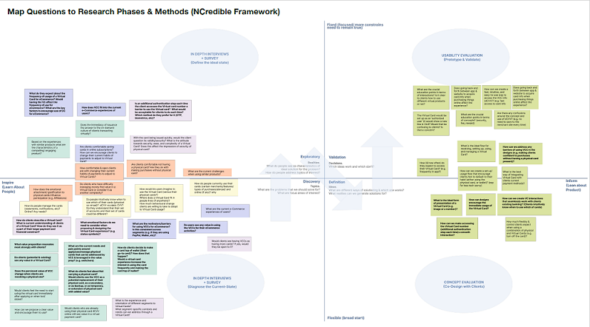

Research method
One of best practices to educate the team on how we move from reseach questions to the methods is to the Ncredible framework. The framework include four spaces across two dimentions: Learn about people versus products; Flexible versus fixed space.
The framework nicely overlaps with the double dimond model which makes it resonate with design and product team more. If time allows, as a group we overlay key research to four spaces. Exploratory questions and question about users fit in the left half of the digram while evaluative questions about product fit to the right half